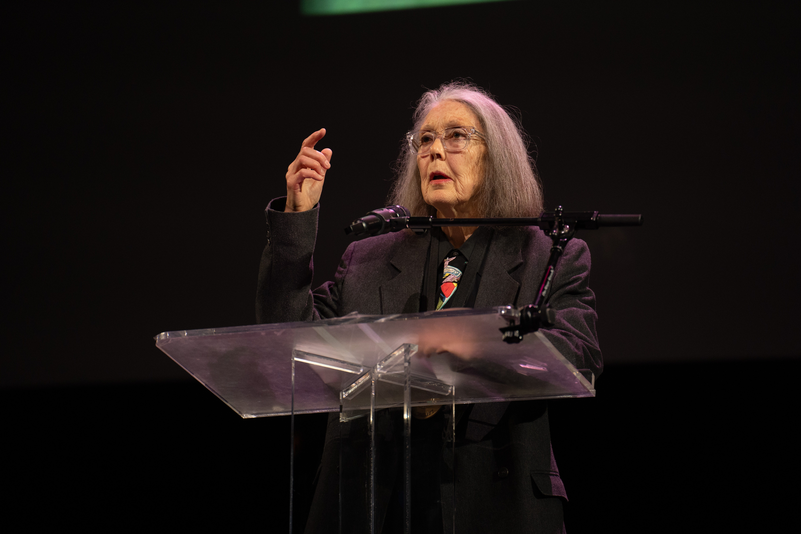
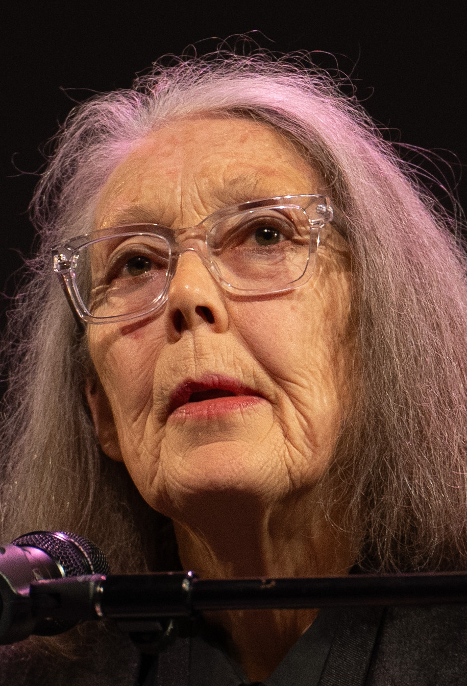
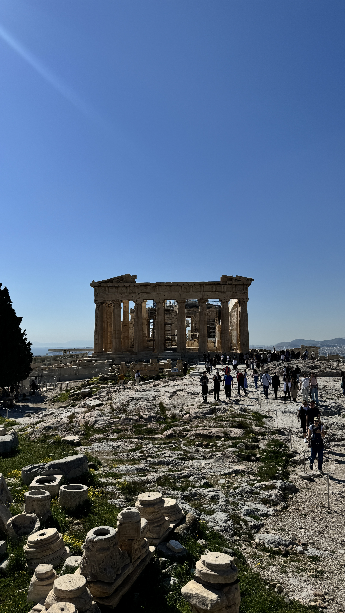

跨越時間
古希臘故事遇見當代的愛、孤獨與失落。

Anne Carson 安・卡森｜加拿大作家、詩人與古典學者

閱讀她時，先問：古老文本在說什麼？今天的人遭遇什麼？將兩者並置後，有什麼新的感受浮現？這是本頁提供的閱讀入口。
古希臘故事遇見當代的愛、孤獨與失落。
詩可以敘事，翻譯可以參與創作。
書不一定只能從第一頁讀到最後一頁。

中文名稱為理解用譯意，非正式出版譯名。以下介紹與閱讀建議由本頁整理，沒有重刊作品全文。
從古典詩思考愛欲中甜蜜與痛苦的關係。
讀法：留意一個詞如何容納矛盾，不急著把它化解。
把神話中的 Geryon 改寫為現代人物，以詩體小說呈現成長與愛。
讀法：從「英雄的對手」改由這個人物自己的內心出發，讀者的同情如何改變？
悼念兄長的盒裝折頁作品，結合文字、照片與信件，並與 Catullus 的悼亡詩對話。
讀法：觀察碎片、空白與物件，如何承載難以完整說出的失落。
由 22 本小冊組成，可按不同次序閱讀。
讀法：換個順序，看看文本之間浮現什麼聯想。閱讀次序也成為作品體驗的一部分。
本頁的理解是：古典材料不只是供人引用的權威，也能參與今天的情感與思考。文類與書本形式不只是容器，而會改變閱讀的節奏與感受。
先找情感入口：愛而不得、失去親人、對自我的困惑。再查古典人物背景，最後回看形式如何強化感受。不必先懂全部希臘神話。
分享預覽圖中肖像為官方插畫，非照片：Niklas Elmehed © Nobel Prize Outreach，依官方教育與編輯使用條件署名。分享圖為本頁原創排版搭配該肖像。網頁實拍照片的攝影者、來源與授權見各圖圖說及 照片來源紀錄；朗讀活動照片依 CC BY-SA 4.0 使用，檔案沿用 Commons 版本。背景為裝飾點線，非歷史實物；沒有使用 AI 生成圖像。
音樂〈Silent Phrases〉由使用者提供。右下角可播放／停止；瀏覽器阻擋自動播放時，由首次互動啟動。可暫停背景動畫。